From Wozniak's garage to Tesla's gigafactory — how engineers turn capital and labor into output.
Dr. Richeng Piao
Department of Economics
Northeastern University
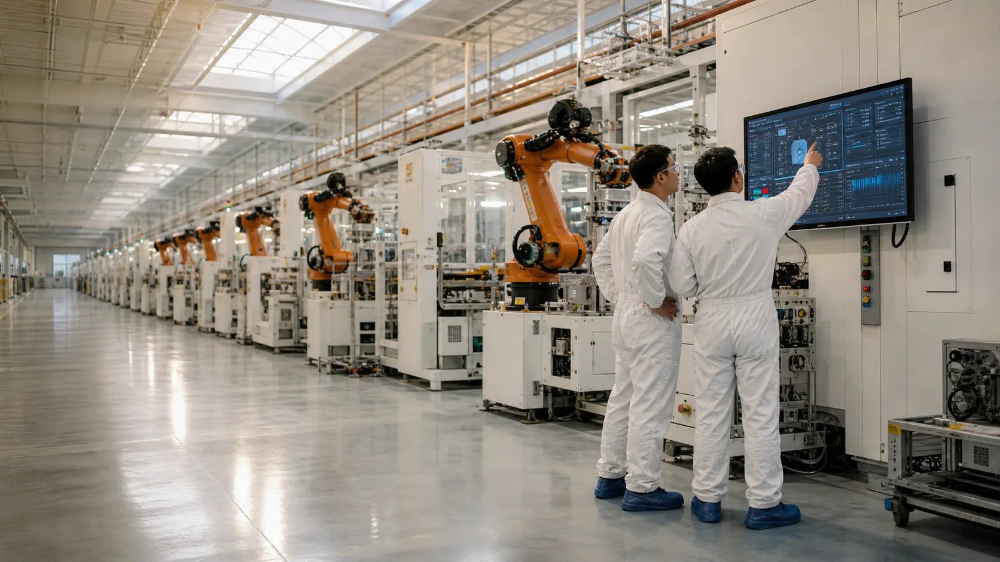
Learning Objectives
By the end of class today, you will be able to…
7.1
Define a production function \(f(K, L)\) and its level sets (isoquants); state the free-disposal and convexity assumptions and explain what each one rules out. (Bloom L2)
7.2
Compute marginal products \(MP_K, MP_L\) and the marginal rate of technical substitution \(\text{MRTS}_{LK} = MP_L / MP_K\) for a Cobb-Douglas technology. (Bloom L3)
7.3
Classify a production function as exhibiting constant, increasing, or decreasing returns to scale using the Cobb-Douglas shortcut \(\alpha + \beta \lessgtr 1\). (Bloom L4)
7.4
Distinguish the three canonical families — Cobb-Douglas, Leontief, perfect substitutes — by isoquant curvature and substitution elasticity \(\sigma\). (Bloom L4)
7.5
Diagnose total factor productivity growth and Hicks-neutral technological change as a shift of the isoquant toward the origin, and read empirical evidence on the US labor-share decline. (Bloom L5)
From Consumer Theory to Producer Theory
A puzzle to hold until the end of the chapter. Kerala, India, 1997: every morning, 5–8% of the day’s catch was dumped unsold on the beach. One change ended that — with no new boat and no new fisher.
Part II — Consumer side (Ch 4–6)
The dining room: what you want, and what you can afford.
Marginal rate of substitution \(\text{MRS} = MU_1/MU_2\)
Slutsky: substitution + income effects
Part III — Producer side (Ch 7–9)
The kitchen: one grill, three cooks — what is physically possible.
Production function \(f(K, L)\)
Marginal product \(MP_K, MP_L\)
Marginal rate of technical substitution \(\text{MRTS}\)
(Ch 8) Cost minimization + (Ch 9) Profit max
The mathematical machinery is identical. Same Lagrangian, same envelope theorem, same comparative statics — just dual interpretations. Consumer maximizes utility subject to a budget; firm minimizes cost subject to an output target.
This chapter has no prices in it. It asks what a firm can make. What it should make needs prices — Ch 8 and Ch 9.
July 1976 — The Los Altos Garage
Two college dropouts in their twenties are trying to build a personal computer they can afford to sell.
Steve Wozniak — engineering. Designed the Apple I motherboard, hand-soldered the chips, debugged the firmware.
Steve Jobs — everything else. Sourced components, negotiated with Paul Terrell at The Byte Shop, set the price at $666.66.
By summer they were shipping ~50 units. By 1980, Apple was public.
Given the bench and the hours in a week, there is a physical maximum number of working boards. Wanting the order filled does not raise it. That mapping from inputs to maximum output is the production function.
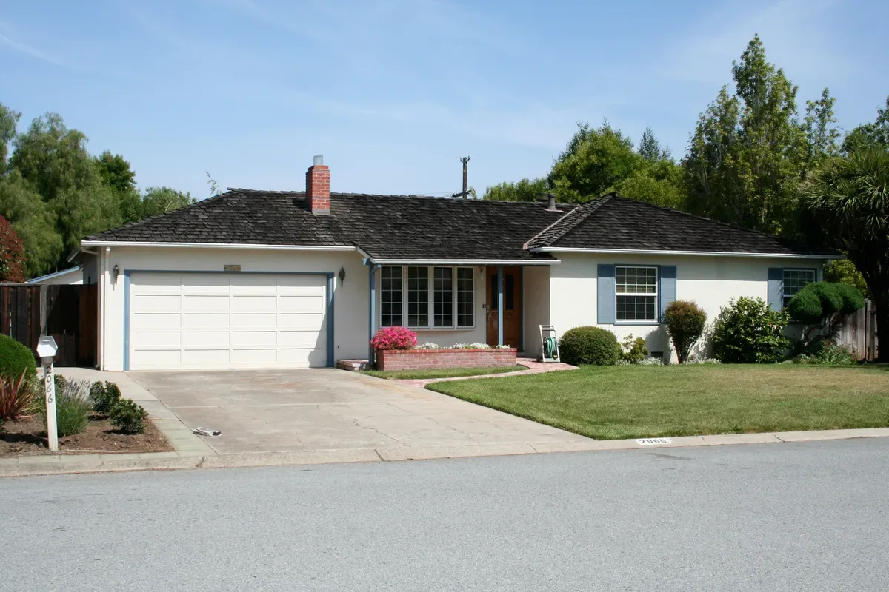
2066 Crist Drive, Los Altos — the Apple I garage
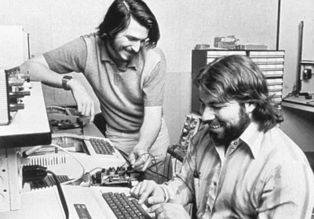
Jobs & Wozniak at the workbench
The Basics of Production — Final Goods
Production describes the process by which a person, company, government, or non-profit agency uses inputs to create a good or service for which others are willing to pay.
Final good — a good that is bought by a consumer.
Example: the Apple I, sold at $666.66 in July 1976.
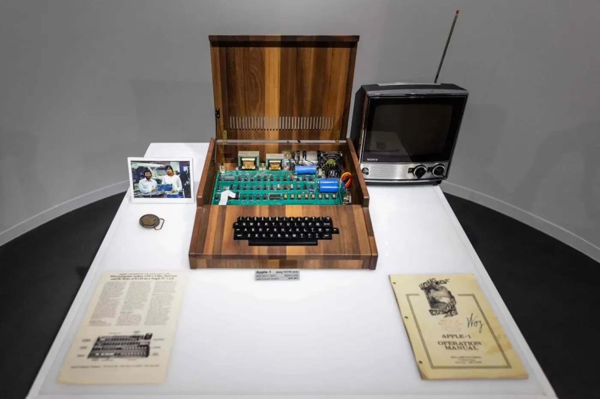
THE APPLE I WENT ON SALE IN JULY 1976 AT A PRICE OF US$666.66
Intermediate good — a good used up in producing something else, not bought by the final consumer.
Example: the MOS 6502 processor inside that Apple I.
The Basics of Production — Four Factors
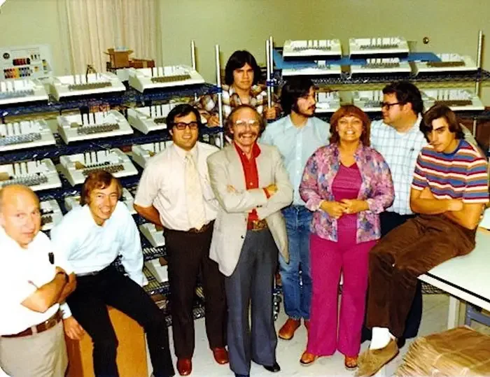
LABOR
All human resources used in production
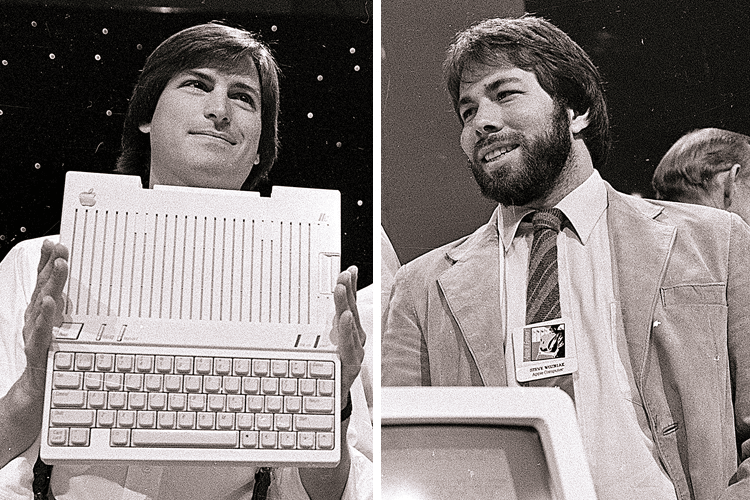
ENTREPRENEURSHIP
Vision, risk-taking, organizing the other factors
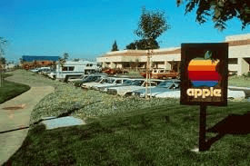
LAND
Physical site & natural resources
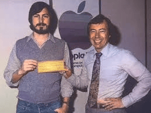
CAPITAL
Buildings, equipment, financial investment
Questions Faced by Entrepreneur — the Part III Roadmap
1
Whether & how much to produce?
CH 9
2
How to choose between capital and labor?
CH 8
3
What will it cost to produce?
CH 8
4
How does the timeframe (SR vs LR) shape decisions?
CH 8
5
How does factory size limit the ability to scale up — and at what cost?
CH 8 & 10
From Wozniak's Garage to Tesla's Gigafactory
Three firms, one logic. This chapter runs on three examples — Wozniak's garage (1976), Tesla's gigafactory (today), and Sam's burger shop — to build up production (this chapter) and then cost (Chs 8–9).
The scale changed; the question didn't. To turn capital and labor into battery capacity, engineers still pick a specific configuration.
How many cell-stacking machines?
How many drying rooms?
How many QA technicians per shift?
Each combination of capital and labor delivers some maximum feasible battery output \(Q\).
Our anchor for Part III: a representative US gigafactory with \(K = 4\) B$ of capital, \(L = 4{,}000\) workers, producing \(Q = 32\) GWh/yr. The equation that links them comes on slide 11. Rounded on purpose (Nevada itself is ~7,000 workers, \$6B+, ~38 GWh) and locked through Chs 8 and 9.
Tesla Gigafactory Nevada — Planet Labs / Wikimedia
Same Product, Different Recipes: Ford
The same Ford Focus rolls out of three Ford plants on three continents — built with three different recipes. Each plant matches its mix of labor and capital to local input prices.
🇺🇸 Detroit, USA
Capital >> Labor
Heavy automation. ~700 industrial robots welding, painting, lifting frames. ~$30/hr labor cost makes machines cheap by comparison.
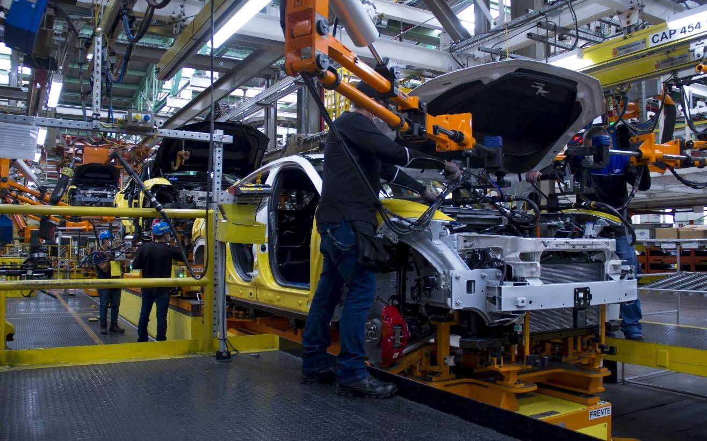
🇲🇽 Cuautitlán, Mexico
Capital ≈ Labor
Skilled-labor assembly with selective automation. Lower wages tilt the recipe back toward humans for tasks that would be robotic in Detroit.
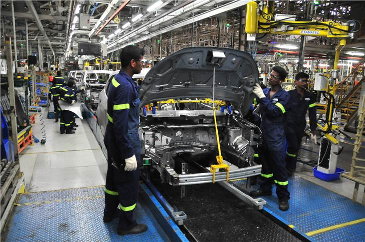
🇮🇳 Chennai, India
Labor >> Capital
Labor-intensive. Imported capital is expensive; local labor is abundant and cheap. Same blueprints, different ratios on the line.
The takeaway: same product, three recipes — each chosen because it's the cheapest recipe given that location's prices for labor vs. capital. Production methods are responses to prices.
The recipe — how much of each input you use — is what economists call technology. A capital-intensive plant leans on machines; a labour-intensive one leans on workers. There is rarely one right answer: the cheapest recipe depends on local input prices, which is exactly why the same Focus is built three ways.
§7.2 The Production Function
isoquants · free disposal · convexity
The engagement
Client: Gigafactory Nevada — Priya Raman, operations. The question: add a shift, or add a machine?
What she can show us: the plant’s output, its headcount, its installed equipment, and what last quarter’s mix produced. What she cannot: the price of either input — that is next chapter.
This chapter’s job: map what the plant can do, before anyone asks what it should. (Her numbers are stylised — ours, not Tesla’s reported figures.)
Hold one puzzle until the end: on the Kerala coast, more fish reached buyers with no new boat and no new fisher — neither a shift nor a machine.
The Basics of Production — Production Functions
A production function describes how output is made from different combinations of inputs.
General form
\[ Q \;=\; f(K, L) \]
\(Q\) — quantity of output
\(K\) — quantity of capital
\(L\) — quantity of labor
\(f\) is the firm's recipe — the technology that maps inputs to maximum-feasible output.
Cobb-Douglas (the workhorse)
\[ Q \;=\; A\, K^{\alpha}\, L^{\beta} \]
\(\alpha, \beta\) — each input raised to a power (typically \( < 1 \))
\(A\) — total factor productivity (technology level)
Inputs are multiplied together — both are required
Gigafactory anchor: \( Q = 8\, K^{0.4}\, L^{0.6} \). We'll lock these exponents for Chs 7-9.
Why Cobb-Douglas? It's smooth (well-defined marginal products everywhere), it has clean algebra (\(MP_K = \alpha \cdot Q/K\), \(MP_L = \beta \cdot Q/L\)), and it fits US manufacturing data remarkably well — the original Cobb & Douglas (1928) estimated \(\alpha \approx 0.25, \beta \approx 0.75\) for the US economy 1899–1922. We'll meet two other families — Leontief and perfect substitutes — in §7.6.
The Production Function — Four Rules
Every production function in this chapter obeys four rules:
1 · Maximum feasible
\(f\) is a frontier, not a typical day.
The speedometer says 140; rush hour is 45. \(f\) is the 140.
2 · Free disposal
\(\partial f/\partial K \geq 0,\;\; \partial f/\partial L \geq 0\)
More input never reduces output: a worker who would be in the way can be told to stand still.
Hold the other input fixed and each extra unit eventually adds less. Sam’s griddle shows it.
4 · Convexity
Upper-contour set is convex.
A mix makes at least as much as the extremes: 10,000 robots with one worker, or 10,000 workers with one hammer.
Cobb-Douglas with exponents below 1 obeys all four — that is why it is the workhorse.
Simplifying Assumptions about Firms
The rest of the contract: five assumptions the four rules do not cover. Each buys algebraic transparency at the cost of some empirical bandwidth.
The firm's product
The firm produces a single good.
The firm has already chosen which product to produce.
→ \(Q\) is a scalar. Multi-product firms wait for grad IO.
Firm behavior
Firms minimize cost at every level of production.
→ Necessary condition for profit max. Ch 8 turns this into the Lagrangian.
Input markets
Hire any \(K, L\) at fixed input prices.
→ The firm is a price-taker for inputs. Ch 19 relaxes it (monopsony).
Capital markets
Capital markets work — no budget constraint.
→ Firm = pure technology + price-taker.
Already said: two inputs only (slide 7) · more input never hurts and diminishing MP (rules 2 and 3, slide 12) · short run = K fixed (slide 15).
SR
What can you produce when only labor is flexible?
Production in the Short Run
Short run: the period in which at least one input cannot be changed. With capital bolted to the floor, output depends on labor alone:
\( Q \;=\; TP(L) \;=\; f(\bar K, L) \)
Fixed input — \(\bar K\)
Capital: the griddle, the robots, the clean room.
Variable input — \(L\)
Labor: shifts, overtime, hiring.
Not a length of time. Short and long run are defined by what is fixed, not by the calendar — so the short run is different for every firm:
Long run: every input can change — the full \(f(K, L)\) is back (§7.3), and Ch 8 picks the cheapest mix.
Background — Sam Opens a Burger Shop
Do you remember this?
Back in Ch 6, Aguiar & Bils estimated Engel curves on CEX + PSID data. Two headline income elasticities:
Food at home
\(\varepsilon_I \approx 0.4\)
Necessity
Restaurant meals
\(\varepsilon_I \approx 1.3\)
Luxury
A restaurant burger is a restaurant meal — a luxury with \(\varepsilon_I \approx 1.3\). As incomes rise, burger spending grows faster than income. That growing market is why Sam decides to open a burger shop.
The market Sam enters
It's a competitive market — exactly what we assumed back in Ch 2 & 3:
Many buyers — hungry customers all over town.
Many rival sellers — dozens of burger shops competing.
Sam is a price-taker: too small to move the price, so Sam sells at the average market price \(\bar p\).
Price is given. So Sam's only lever on profit is the production side: how efficiently inputs become burgers.
Today's question. Sam can't control the price — the market sets it. What Sam can control is the recipe: capital \(K\) and labor \(L\) in, burgers \(Q\) out. That's the production function \(Q = f(K, L)\) — and it's what the rest of this chapter is about.
Production in Practice — A Burger Shop
Sam sells into a competitive market: many shops, one going price. He is a price-taker, so the one thing he controls is the recipe — inputs in the door, burgers out the window.
SR question, applied. The shop's capital (machines, store layout, equipment) is bolted in. For the next two weeks, only labor — how many cooks on shift — is adjustable. So we collapse \(Q = f(K, L)\) to \(Q = f(\bar K, L) = TP(L)\) and study the one-variable problem.
Business Proposal — Doubling Burger Output for a 2-Week Festival
Scenario. A music festival lands in town in 2 weeks. Based on Sam's experience with events like this, demand for burgers will double for the duration. The owner asks: can we meet it — and which plan should we run with?
Current capacity
90 / hr
1 grill · 3 workers · today's recipe
Festival target
180 / hr
2× demand for the next 2 weeks
Plan A — more labor
Extra shift + temp hires. Available in days. Cost: payroll only.
Plan B — second grill
Order, install, train. ~6 weeks lead time. Misses the festival.
Recommendation
Run Plan A. Capital can't change inside the 2-week window — the new grill can't be ordered, installed, and tested in time. The only feasible margin is labor.
This is the Short Run in one sentence: \(K = \bar K\) is fixed; \(L\) is the only variable. The production function collapses to \(Q = f(\bar K, L) = TP(L)\), and the question becomes how many extra workers to hire — until \(MP_L\) drops to zero.
Bridge to the math. The next slides walk through this proposal numerically: how much extra \(Q\) does each additional worker add, where does \(MP_L\) peak, and at what point should the owner stop hiring even though demand is unmet?
Total Product — What Each Worker Adds
Sam runs Plan A: the one griddle stays put — add workers. As labor rises, how does output grow?
Total Product (TP). The total output produced with a given amount of labor on the fixed griddle — \(TP(L) = f(\bar K, L)\).
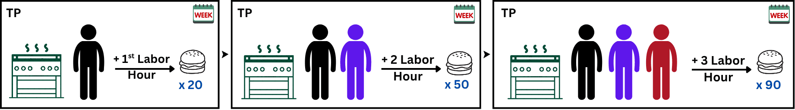
Notice. Output climbs \(20 \rightarrow 50 \rightarrow 90\) — so far each added worker contributes more than the last. We formalize that jump as \(MP_L\) next.
Total & Average Product — Sam’s Shop
Read off output at each labor level. \(TP\) is total output; \(AP_L = TP / L\) is output per worker.
\(\bar K\)
L
TP
\(AP_L\)
1
0
0
—
1
1
20
20.0
1
2
50
25.0
1
3
90
30.0
Production curve (slope = \(MP_L\))
TP rises sharply; \(AP_L\) rises gently. \(MP_L\) comes in the next section.
Average product is a batting average for the whole roster: \(AP_L = TP/L\) — 20, 25, 30. It says how the team has done, not what the next hire adds; that is marginal product, next. TP is convex here because of specialization. Gigafactory check: 32 GWh ÷ 4,000 workers = 8 GWh per thousand workers.
Average Product — A Key Short-Run Metric
With \(K = \bar K\) fixed, total output \(Q\) depends only on labor: \(Q = f(\bar K, L)\). The natural productivity metric is output per worker — the average product of labor.
Definition
Average product of an input = total output divided by the quantity of that input used.
\[ AP_L \;=\; \dfrac{Q}{L} \]
Units: output per worker (or per worker-hour, depending on how \(L\) is measured).
Same idea as a batting average — per-unit performance, not total.
Each worker produces an average of 20 motherboards per week at this scale.
Why average product matters. \(AP_L\) is the natural single-number summary of how productive labor is on this particular plant. Gigafactory check: with \(Q = 32\) GWh/yr and \(L = 4{,}000\) workers, \(AP_L = 8\) GWh per thousand workers (or 8,000 kWh per worker per year). We'll see how AP and MP fit together in the §7.4 three-stage diagram.
§7.3 Marginal Products & MRTS
two slopes · their ratio · the engine of the chapter
Marginal Product — What One More Worker Adds
Marginal product is the additional output a firm produces from one more unit of an input, holding all other inputs constant.
\[ MP_L \;=\; \dfrac{\Delta Q}{\Delta L} \]
Labor
+
Capital
only 4 sets
=
Output Q
Marginal Product of Labor — Increasing Returns at First
Marginal product of labor \((MP_L)\): the change in output from one more unit of labor. \(MP_L = \Delta Q / \Delta L\).
Burger shop, K̄ = 1 grill
K
L
TP
\(MP_L\)
1
0
0
—
1
1
20
20
1
2
50
30
1
3
90
40
Production curve (slope = \(MP_L\))
Slope of TP at each labor level is \(MP_L\) — and it's rising.
Returns to labor
Increasing marginal returns
Each additional worker adds more to output than the previous one.
20 → 30 → 40
Why? Specialization — one person can grill patties while another dresses buns while another rings up the customer.
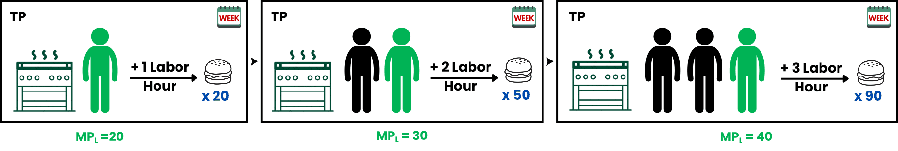
Sam’s \(MP_L\) — Rises, Then Falls, Then Turns Negative
Sam’s table read at the margin: \(MP_L = \Delta Q / \Delta L\), what each extra cook adds on the one griddle.
Burger shop, K̄ = 1, extended to L=6
K
L
TP
\(MP_L\)
1
0
0
—
1
1
20
20
1
2
50
30
1
3
90
40
1
4
120
30
1
5
140
20
1
6
120
−20
TP rises, peaks, falls
TP peaks at L=5; the 6th worker is in the way.
Increasing 20 → 30 → 40
Workers 1–3 specialize: one grills, one dresses buns, one rings up.
Diminishing 40 → 30 → 20
Workers 4–5 still add, but less: they queue for the one griddle.
Negative −20
The 6th worker reduces output: in the way.
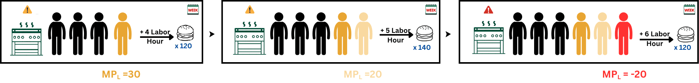
Why \(MP_L\) Diminishes — Capital Is Bolted In
One griddle — it holds about 10–12 patties at a time. That physical size is the cap.
Griddle capacity (the binding input)
One flat-top griddle fits about 12 patties at once; a batch takes about 4 minutes (≈2 min per side).
Batches per hour: \(60 \div 4 = \mathbf{15}\)
Burgers per hour: \(15 \times 12 = \mathbf{180}\)
The hard ceiling. At most 180 burgers/hour with one griddle — no matter how many workers it hires.
Why this is the Short Run
The owner can't add a second griddle in 2 weeks — planning, ordering, installing, and training take time. Until then, more labor → more cooks waiting for the same griddle → diminishing \(MP_L\).
SR definition, applied. \( Q = f(\bar K, L) = TP(L) \). Only labor moves; capital is fixed at \(\bar K = 1\) griddle.
Average Product — The Full Picture
K = 1
L
TP
\(AP_L\)
\(MP_L\)
1
0
0
—
—
1
1
20
20.0
20
1
2
50
25.0
30
1
3
90
30.0
40
1
4
120
30.0
30
1
5
140
28.0
20
1
6
120
20.0
−20
\(AP_L = TP/L\); peak at \(L = 4\) where \(MP_L = AP_L = 30\).
Total Product (TP)
Marginal Product (MP) & Average Product (AP)
The identity to remember. \(MP_L > AP_L \Rightarrow AP_L\) rising. \(MP_L < AP_L \Rightarrow AP_L\) falling. \(MP_L = AP_L\) at the AP peak (here, \(L = 4\)).
§7.4 — Total, Average, and Marginal Product
Sam’s \(MP\) rises, falls, then turns negative. As curves (\(K = \bar K\) fixed): three stages, split where \(MP = AP\) and where \(MP = 0\).
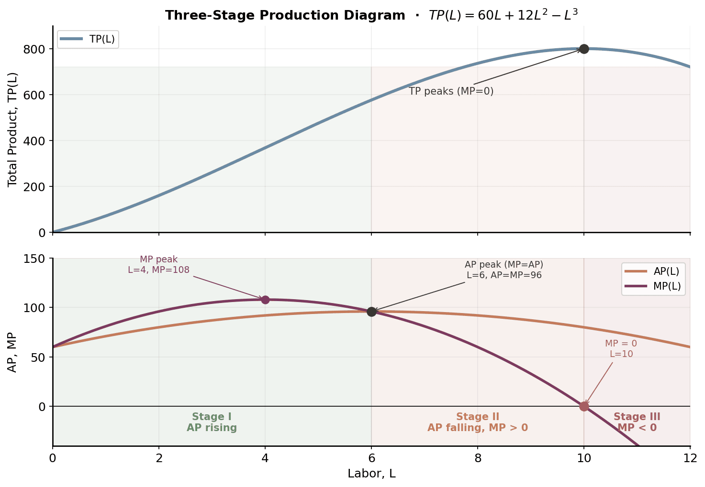
Definitions.
\(TP(L) = f(\bar K, L)\)
\(AP(L) = TP(L)/L\)
\(MP(L) = dTP/dL\)
AP ↔ MP identity.
\( \dfrac{dAP}{dL} = \dfrac{MP - AP}{L} \)
\(MP > AP \Rightarrow AP\) rising; \(MP < AP \Rightarrow AP\) falling; \(MP = AP\) at AP's peak.
The cubic of Walkthrough 7.4 (next slide): \(TP = 60L + 12L^2 - L^3\). MP peaks at \(L=4\); AP peaks at \(L=6\) where MP crosses AP; MP=0 at \(L=10\).
Walkthrough 7.4 — Cubic TP and the Three Stages
Meet Nora, plant manager at a furniture-assembly shop with a fixed factory floor and \(\bar K\) machines. Short-run output follows \(TP(L) = 60L + 12L^2 - L^3\) on \(L \in [0, 13]\). Her HR director asks: "How many workers should we hire today — and at what headcount do extra workers stop helping?"
Problem.
Find the three stage boundaries: where \(MP\) peaks, where \(MP = AP\) (AP peak), and where \(MP = 0\) (Stage III boundary).
Takeaway. The three stages need \(MP\) to rise, then fall; a cubic does that in one formula. Stage II (\(6 < L < 10\)) is where firms operate (Ch 8) — and it is the only stage the next model, Cobb-Douglas, keeps.
You Try! — Plug \(\bar K = 4\) into Cobb-Douglas
Your turn. Take \( Q = K^{0.5} L^{0.5} \) and bolt capital at the garage’s 4 workstations.
Write \(Q\) as a function of \(L\) alone.
How many boards with \(L = 4\) workers?
Compare \(MP_L = dQ/dL\) with \(AP_L = Q/L\). Which stage is this firm in?
3. \( MP_L = 1/\sqrt{L} \), \( AP_L = 2/\sqrt{L} \): \(MP = \tfrac12 AP\) at every \(L\) — Stage II only.
The Apple Garage — 4 workstations
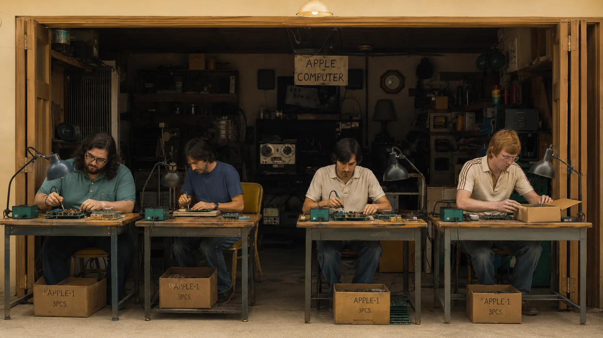
\( \bar K = 4 \) workbenches (fixed)
Short-Run Production at the Apple Garage
Holding \(\bar K = 4\), step \(L\) from 0 to 5 and read off \(Q\), \(MP_L\), \(AP_L\) for \( Q = 2\sqrt{L} \).
Capital, \(\bar K\)
Labor, \(L\)
Output, \(Q\)
\(MP_L = \dfrac{\Delta Q}{\Delta L}\)
\(AP_L = \dfrac{Q}{L}\)
4
0
0.00
—
—
4
1
2.00
2.00
2.00
4
2
2.83
0.83
1.42
4
3
3.46
0.63
1.15
4
4
4.00
0.54
1.00
4
5
4.47
0.47
0.89
Diminishing marginal product in action. The 1st worker adds 2.00 to output; the 5th adds only 0.47. Each new worker has less of the fixed capital to work with — \(MP_L\) shrinks monotonically as \(L\) rises. Note also: \(AP_L > MP_L\) for every \(L \geq 1\), so \(AP_L\) is also falling (the §7.4 identity \( dAP_L/dL = (MP_L - AP_L)/L \) at work).
Visualizing the Marginal Product of Labor
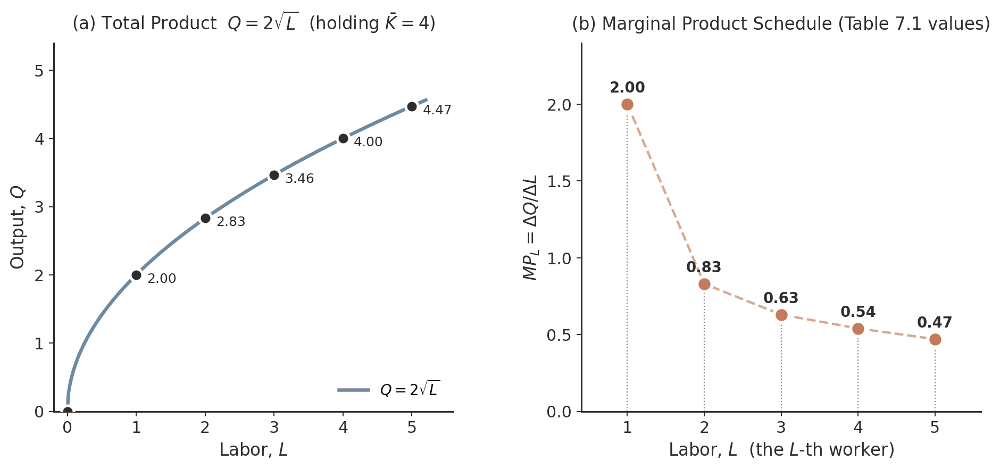
Left panel — \(TP(L) = 2\sqrt{L}\)
The total-product curve rises with \(L\) but at a decreasing rate. The black dots mark the six Table 7.1 outputs — \(Q = 0,\ 2.00,\ 2.83,\ 3.46,\ 4.00,\ 4.47\) at \(L = 0,1,\ldots,5\).
Right panel — \(MP_L\) plotted directly
\(MP_L = \Delta Q / \Delta L\) at each new worker. The Table 7.1 schedule falls monotonically from 2.00 at \(L=1\) to 0.47 at \(L=5\) — diminishing marginal product.
Walkthrough 7.3 — Cobb-Douglas TP/AP/MP
Industry context. A US solar-panel assembly plant (NAICS 335 advanced manufacturing) runs Cobb-Douglas \(Q = K^{0.4} L^{0.6}\), where \(Q\) is panels/year, \(K\) is units of robotic assembly equipment, and \(L\) is workers. Capital is fixed at \(\bar K = 100\) assembly stations until the next plant-expansion review. What do TP, AP, and MP look like as functions of labor alone — and does the classical three-stage diagram emerge?
Problem & Set up.
Substitute \(\bar K = 100\): the constant is \(100^{0.4} \approx 6.3096\), so \(TP(L) = 6.3096 \cdot L^{0.6}\). Derive closed forms for \(AP, MP\) and tabulate.
Dividing: \(\dfrac{MP(L)}{AP(L)} = \dfrac{3.7857 L^{-0.4}}{6.3096 L^{-0.4}} = \mathbf{0.6 = \beta}\) for every \(L > 0\).
\(MP\) is always proportional to \(AP\) with constant ratio \(\beta\). The two curves never cross.
Step 3 — Tabulate
\(L\)
\(TP\)
\(AP\)
\(MP\)
1
6.31
6.31
3.79
4
14.50
3.62
2.17
9
23.58
2.62
1.57
16
33.30
2.08
1.25
25
43.53
1.74
1.04
Every row: \(MP/AP = 0.6\). ✓
Check. \(TP\) is increasing but concave; \(AP\) and \(MP\) both decline monotonically; neither has an interior maximum. Takeaway.Cobb-Douglas does NOT produce the classical three-stage diagram. No rising-then-falling \(MP\), no \(MP=AP\) crossing, no \(MP < 0\) region. The cubic of Walkthrough 7.4 is the form that does deliver it.
\( MP_L \) — From Discrete Difference to Derivative
Quick check at \(L = 4\): the calculus says \(MP_L = 1/\sqrt{4} = 0.50\). The discrete table says \(MP_L = 0.54\) (the row-to-row jump from \(L=3\) to \(L=4\)). The two agree to about 8% — the discrete value is slightly larger because it averages the slope across a finite \(\Delta L = 1\) interval. As \(\Delta L \to 0\), they coincide.
LR
What can you produce when every input is flexible?
Production in the Long Run — The Full \(K \times L\) Grid
In the long run, both \(K\) and \(L\) are choice variables. The table below shows \(Q = \sqrt{K \cdot L}\) for every \((K, L)\) combination from 1 to 5. The K=4 row (highlighted) is the short-run slice from the Apple Garage table.
K \ L
L = 1
L = 2
L = 3
L = 4
L = 5
K = 1
1.00
1.41
1.73
2.00
2.24
K = 2
1.41
2.00
2.45
2.83
3.16
K = 3
1.73
2.45
3.00
3.46
3.87
K = 4 (SR)
2.00
2.83
3.46
4.00
4.47
K = 5
2.24
3.16
3.87
4.47
5.00
The LR substitution insight. The same output \(Q = 4.47\) shows up in two cells: \((K=4, L=5)\) and \((K=5, L=4)\). In the SR, only the K=4 row is available — you'd need 5 workers. In the LR, you can buy a 5th workstation and run it with 4 workers. Same output, different recipe. Every isoquant is the set of cells in this table that share a Q value.
Isoquants — Curves of Equal Output
An isoquant is the set of input combinations \((K, L)\) that produce a given level of output \(\bar Q\).
\[ \{(K, L) : f(K, L) = \bar Q\} \]
From the LR grid on the previous slide: trace the cells with the same \(Q\) value. They form a smooth curve in \((L, K)\) space.
\(Q = 4\): pass through \((4, 4)\) and many others
Higher \(Q\) → isoquant farther from the origin. They never cross.
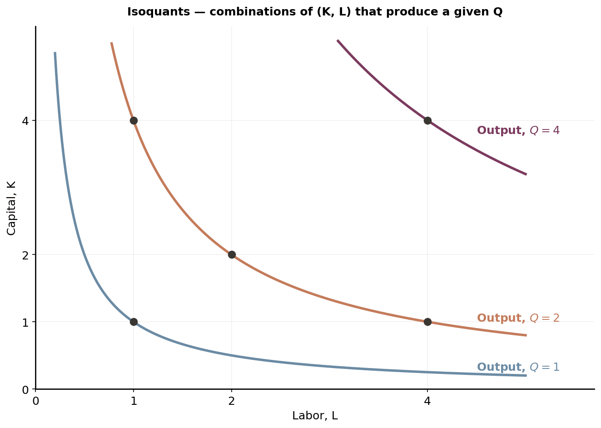
Marginal Products — The LR Cost-Min Setup
In the long run, all inputs are flexible — the firm can pick any \((K, L)\) combination. The goal is to minimize cost for a given output. That choice depends on two things:
Input prices (\(w\) for labor, \(r\) for capital) — set by the labor and capital markets.
Marginal products (\(MP_L, MP_K\)) — how much extra output each input adds, set by the firm's technology.
Marginal product of an input = factor share × average product. We'll use this constantly.
You Try! — Which Combos Are on the Same Isoquant?
The gigafactory's production function is \( Q = 8\sqrt{K L} \). The chapter's anchor produces \( Q = 32 \) GWh/yr. Which of the candidate \((K, L)\) combinations below lie on the same isoquant?Hint: same Q means same \( K \cdot L \).
Candidate
\(K\)
\(L\)
\(K \cdot L\)
\(Q = 8\sqrt{K L}\)
On \(Q=32\)?
(a)
4
4
16
32
YES ✓
(b)
8
2
16
32
YES ✓
(c)
2
8
16
32
YES ✓
(d)
5
5
25
40
no ✗
(e)
3
6
18
33.9
no ✗
The isoquant for \( Q = 32 \) is the hyperbola \( K = 16/L \). Any \((K, L)\) with \( K \cdot L = 16 \) sits on it.
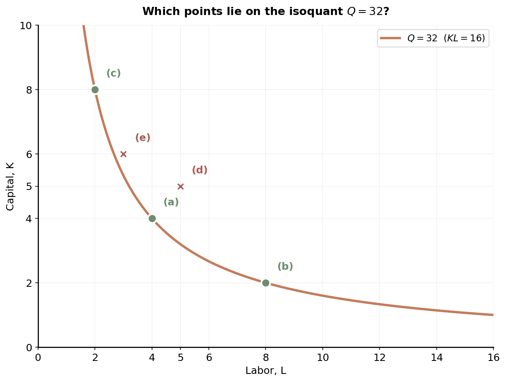
Takeaway. All bundles with \( K \cdot L = 16 \) produce the same 32 GWh. Three very different recipes — (a) balanced (4, 4), (b) capital-heavy (8, 2), (c) labor-heavy (2, 8) — share the isoquant. Which one minimizes cost depends on input prices, the Ch 8 question.
The Marginal Rate of Technical Substitution
The slope of an isoquant describes how inputs may be substituted to keep output fixed. We call it the marginal rate of technical substitution — \(\text{MRTS}_{LK}\) is the rate at which the firm trades labor for capital, holding \(\bar Q\) constant.
Derivation along an isoquant
Along an isoquant, total output is constant, so the change in \(Q\) from any small move \((\Delta K, \Delta L)\) is zero:
\( \Delta Q \;=\; MP_L \cdot \Delta L \;+\; MP_K \cdot \Delta K \;=\; 0 \)
Rearrange to find the slope of the isoquant:
\( MP_K \cdot \Delta K \;=\; -MP_L \cdot \Delta L \;\Longrightarrow\; -\dfrac{\Delta K}{\Delta L} \;=\; \dfrac{MP_L}{MP_K} \)
Moving down an isoquant: \(K\) declines, the slope gets smaller. The firm has less capital, so each remaining unit of \(K\) is relatively more productive.
Sign convention: the isoquant slopes downward (\(dK/dL < 0\)). MRTS is reported as the positive magnitude — we add the minus sign.
A menu with no prices on it. MRTS prices a swap in capital, not in dollars. The dollars arrive in Ch 8.
Walkthrough 7.1 — Priya's MRTS at Tesla Nevada
Meet Priya, ops planner at Tesla's Nevada gigafactory. Finance asks: "If we delay $1B of capital, how many extra workers do we need to hold output at 32 GWh?" Her answer is the \(\text{MRTS}_{LK}\) at the current point — and at a labor-intensive alternative \((K, L) = (1.414, 8)\).
Problem & Set up.
Production technology: \( Q = 8 K^{0.4} L^{0.6} \). Compute \(MP_K\), \(MP_L\), \(\text{MRTS}_{LK}\) at (a) \((4, 4)\) and (b) \((1.414, 8)\). Cobb-Douglas shortcut: \(MP_K = \alpha\,\tfrac{Q}{K},\; MP_L = \beta\,\tfrac{Q}{L},\; \text{MRTS}_{LK} = \tfrac{\beta}{\alpha}\cdot\tfrac{K}{L}\).
Labor is already abundant — the next worker is barely worth a quarter-billion in capital.
Check. Both points sit on the \(Q = 32\) isoquant: \(8 \cdot 4^{0.4} \cdot 4^{0.6} = 32\) ✓ and \(8 \cdot 1.414^{0.4} \cdot 8^{0.6} \approx 32\) ✓.
Takeaway. Slide down the isoquant (more \(L\), less \(K\)) → \(K/L\) falls → MRTS falls from 1.5 to 0.265. The isoquant flattens: when labor is abundant, you need many more workers to substitute for one unit of capital. Diminishing MRTS.
Walkthrough 7.2 — Cobb-Douglas Isoquant Slope at a Point
Meet Liam, a teaching assistant who tells students: "There are two ways to get the MRTS — an implicit-diff slope of the isoquant, and the ratio \(MP_L/MP_K\). They had better agree." He picks \(Q = K^{0.5} L^{0.5}\), the isoquant for \(\bar Q = 10\), and the point \(L = 5\). Watch.
Problem & Set up.
Production: \(Q = K^{0.5} L^{0.5}\). Solve \(K^{0.5} L^{0.5} = 10\) for the isoquant: \(K = 100/L\) (a hyperbola). Compute the slope at \(L = 5\) two ways.
Check. Both methods give \(\text{MRTS} = 4\). Move along the isoquant to \(L = 10\): \(K = 10\), MRTS \(= 1\). To \(L = 20\): \(K = 5\), MRTS \(= 0.25\). Takeaway. MRTS depends on position on the isoquant — as \(L\) grows, MRTS shrinks. The two methods (implicit diff and \(MP_L/MP_K\)) are equivalent statements of the same calculus identity. Use whichever is easier for the given production function.
§7.5 Returns to Scale
double all inputs · what happens to output?
Returns to Scale — A Concrete Cobb-Douglas Example
Returns to scale refers to the change in output when all inputs are increased in the same proportion.
Returning to the Cobb-Douglas production function:
\( Q = K^\alpha L^\beta \)
Click through Step 1 → Step 2 → takeaway.
Step 1 — Plug in
If \(\alpha = \beta = 0.5\), then
\( Q = K^{0.5} L^{0.5} \)
At \(K = 2,\ L = 2\):
\( Q = 2^{0.5} \cdot 2^{0.5} = 2 \)
Step 2 — Double both inputs
What happens at \(K = 4,\ L = 4\)?
\( Q = 4^{0.5} \cdot 4^{0.5} = 2 \times 2 = 4 \)
→ Output doubles!
The pattern. Inputs scaled by \(t = 2\); output scaled by \(t = 2\). This is constant returns to scale. Change the exponents and we get a different verdict — the full taxonomy is on the next slide.
Spacing of Isoquants Reveals Returns to Scale
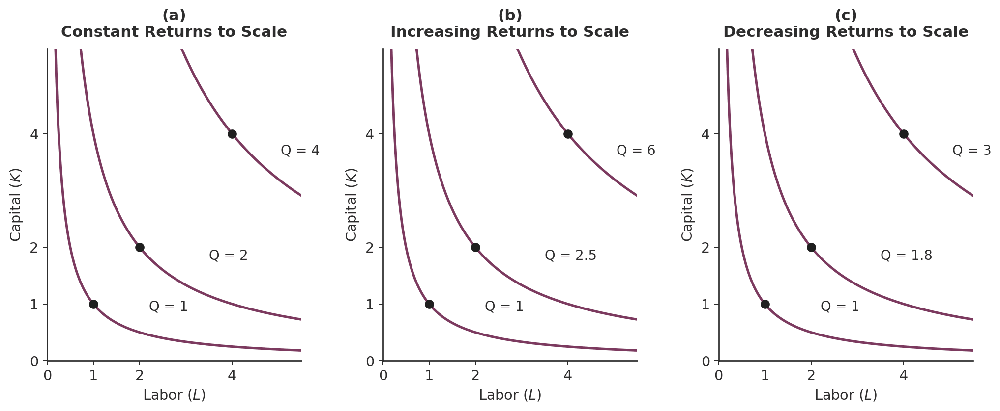
Reading the labels. Walk along the 45° ray from the origin and read the Q-labels: doubling exactly = CRS (Q: 1→2→4); more than doubling = IRS (Q: 1→2.5→6); less than doubling = DRS (Q: 1→1.8→3).
Three Scenarios — Doubling Both Inputs
Increase all inputs by a factor \(t > 1\). Compare the output change to the input change:
Click to reveal each scenario — then arrow down ↓ for the picture and a real-life case.
CRS
\(f(tK, tL) = t \cdot f(K, L)\)
Constant returns. Output scales 1-for-1 with inputs.
Double inputs → output doubles. Copy the plant next door.
IRS
\(f(tK, tL) > t \cdot f(K, L)\)
Increasing returns. Output rises more than proportionally.
Double inputs → output more than doubles. Setup costs spread over more output.
DRS
\(f(tK, tL) < t \cdot f(K, L)\)
Decreasing returns. Output rises less than proportionally.
Double inputs → output less than doubles. Something outside the formula was not doubled.
Cobb-Douglas shortcut. For \(Q = A K^\alpha L^\beta\):
Returns to scale is a long-run / global concept — it scales all inputs together. Distinct from diminishing marginal product, which holds one input fixed. Next sub-slide ↓ visualizes the three cases side-by-side; then Tesla’s plant network as CRS.
Doubling Inputs — Visualizing the Three Cases
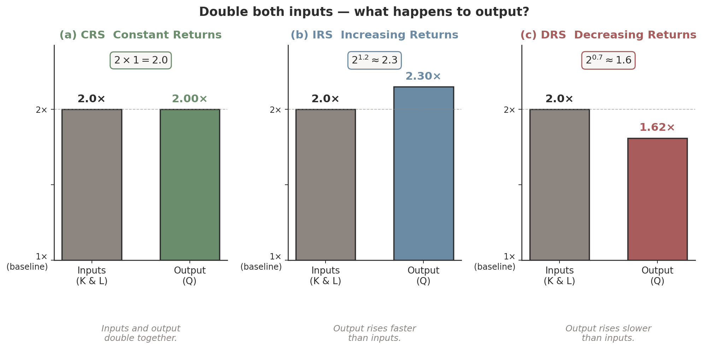
Each panel: grey bar = input multiplier (2×); colored bar = output multiplier. The dashed line at 2× is the CRS reference. Next ↓ — a real-life example for each case.
CRS in Real Life — Tesla's Gigafactory Network
The story
Tesla's Gigafactory Nevada produces 32 GWh/year of batteries from \(K = \$4\text{B}\) and \(L = 4{,}000\) workers. Gigafactory Texas — same layout, same staffing.
Why CRS works here. Manufacturing recipes replicate cleanly. Running two identical recipes makes twice the output — the "replication argument," and the reason CRS is the default for competitive industries.
Gigafactory Nevada (aerial). Cloning the building & recipe in Texas exactly doubles total US output.
Walkthrough 7.5 — Returns to Scale: Plug In and Compare
Meet Maya, an investment analyst benchmarking four firms. Her question for each: if the firm doubles both inputs, does output double?
Method — no shortcut.
Double the bundle from \( (K,L)=(1,1) \) to \( (2,2) \): compute \( f(1,1) \) and \( f(2,2) \) term by term, then read the ratio. Exactly \(2\times\) → CRS · more → IRS · less → DRS. This test works foranyproduction function.
Why not just add the exponents? For Cobb-Douglas \(K^\alpha L^\beta\) the sum \(\alpha+\beta\) happens to give the same answer — but it breaks the moment the function isn’t a simple product: \( (K+L)^2 \), \( \min(K,L) \). The plug-in test above never breaks. Use it on your homework.
Poll #1 — Does the shortcut still work?
A workshop’s technology is \( Q = \sqrt{K} + \sqrt{L} \) — note it’s a sum, not a product. If it doubles both \(K\) and \(L\), output…
A) Exactly doubles — CRS
B) More than doubles — IRS
C) Less than doubles — DRS
D) Can’t tell without knowing \(K\) and \(L\)
45 sec to vote
Poll #1 — Answer: C) DRS
Scale both inputs by \(t\): \( f(tK, tL) = \sqrt{tK} + \sqrt{tL} = \sqrt{t}\,(\sqrt{K}+\sqrt{L}) = t^{0.5} f(K,L) \).
So \(r = 0.5 < 1 \Rightarrow\) DRS. Doubling multiplies output by only \(2^{0.5} = 1.41\times\). Check: \(f(1,1)=2.00 \to f(2,2)=2\sqrt{2}=2.83\).
The trap (A). Adding “exponents” \(0.5+0.5=1\) says CRS — wrong. The \(\alpha+\beta\) rule only applies to a product \(K^\alpha L^\beta\). This is a sum, so you must scale and compare.
Two Returns-to-Scale Traps
Trap 1 — Euler is iff CRS
The result we are using (stated, not proved — the proof is in the book, §7.5.3): for a function homogeneous of degree \(r\), \(K \cdot MP_K + L \cdot MP_L = r \times Q\).
Pay every input its marginal product and the wage bill comes to \(r \times Q\) — not \(Q\). It only exhausts revenue when \(r = 1\).
Same \(Q=100\), price $1
Bill \(rQ\)
Revenue
Left
CRS \(r=1.0\)
$100
$100
$0
DRS \(r=0.7\)
$70
$100
+$30
IRS \(r=1.2\)
$120
$100
−$20
\(Q\) is 100 in every row. \(r\) scales the wage bill, never output — DRS doesn’t mean less output, it means each input’s \(MP\) claims a smaller slice of it.
The DRS surplus goes to an unpaid fixed factor (land, the owner). IRS can’t pay its inputs out of revenue — a reason IRS industries don’t stay competitive.
Trap 2 — CRS ≠ "easy to scale"
CRS is a statement about the function, not about the firm's ability to scale.
Tesla can in principle build a second Gigafactory Nevada and double output — if it can also double the $6B capital, the 7,000 workers, the lithium-cobalt-separator supply chain, management bandwidth, and regulatory approvals.
In practice, Tesla doubled the number of plants 2020-2025, not the per-plant output of any single one.
The CRS algebra is a green light at the technology level. Real-world scaling has many other binding constraints.
§7.6 Three Production-Function Families
Cobb-Douglas · Leontief · perfect substitutes
Shape of Isoquants Reveals Substitutability
Left panel — easy substitution
Gentle, near-linear curves. Capital and labor are relatively interchangeable — e.g., human cashiers and self-checkout kiosks in retail.
Right panel — rigid recipe
Sharply bowed, near-L-shape. \(K\) and \(L\) need each other — e.g., commercial aircraft and certified pilots; you can't fly a 737 with extra mechanics.
The curvature of an isoquant is the whole story: it says how easily the firm can swap one input for another while holding output fixed. Straighter means easier.
Perfect Substitutes & Perfect Complements — Side by Side
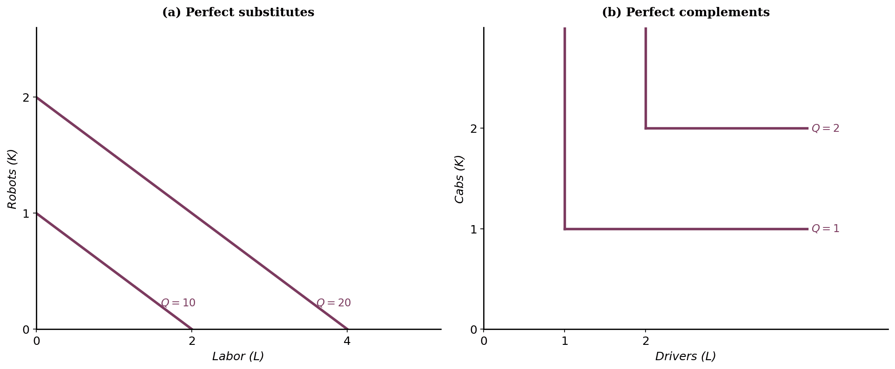
(a) Perfect substitutes — e.g., a warehouse where one robot replaces two workers. Trading 1 \(K\) for 2 \(L\) keeps output constant anywhere on the line.
(b) Perfect complements — e.g., taxis. To run one more cab you need one more driver. Surplus on either arm of the L is wasted.
At the corner of the L-shaped isoquant: zero substitutability. Slope is vertical above the corner, horizontal to the right — MRTS is either 0 or ∞.
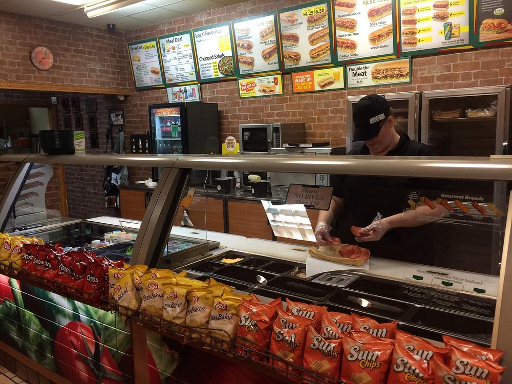
One worker at one topping rail — the binding bundle. Add a worker without a rail and the new worker just stands there.
Leontief in the wild: Uber (1 driver + 1 vehicle per trip), commercial aviation (1 airframe + a certified crew), and most assembly lines. Adding one arm of the pair without the other produces nothing.
Walkthrough 7.6 — Leontief Perfect Complements
Meet Carlos, ops manager at a Bay-Area battery-pack assembly line. Each finished pack needs 2 stations of assembly equipment + 3 worker-hours. Today he has \(K = 10\) stations and \(L = 12\) worker-hours scheduled. His CFO asks: "What can we ship today? And what bundle would deliver 4 packs?"
Problem & Set up.
Leontief technology: \( Q = \min\!\left(\dfrac{K}{2},\, \dfrac{L}{3}\right). \) Compute (a) today's output and the binding input at \((K, L) = (10, 12)\); (b) the bundle on the \(\bar Q = 4\) isoquant.
(a) Output at \((K, L) = (10, 12)\)
Try it first — then click to reveal.
Step 1. Capital allows: \(K/2 = 10/2 = \mathbf{5}\) packs.
Labor is binding; 2 capital-stations sit idle. Carlos: "We can ship 4. Adding a 13th worker-hour does nothing without an 11th station — and vice versa."
(b) Bundle on the \(\bar Q = 4\) isoquant
Try it first — then click to reveal.
Step 1. Need \(K/2 \geq 4 \Rightarrow K \geq \mathbf{8}\).
Step 2. Need \(L/3 \geq 4 \Rightarrow L \geq \mathbf{12}\).
Step 3. Isoquant corner: \((K, L) = (\mathbf{8}, \mathbf{12})\) — L-shaped from there outward.
Carlos's fix: hire 0 more workers but cut to \(K = 8\) stations — same output, less idle capital.
Check. At \((8, 12)\): \(Q = \min(8/2, 12/3) = \min(4, 4) = 4\) ✓ — both legs of the recipe are at capacity.
Takeaway. Leontief = zero marginal substitutability. \(MRTS\) is 0 along the horizontal leg, ∞ along the vertical leg, undefined at the corner. There is no smooth trade-off — just a recipe.
The Three Canonical Families
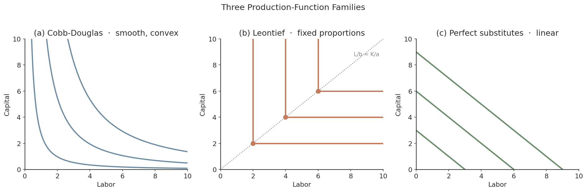
Cobb-Douglas
\(Q = A K^\alpha L^\beta\)
Smooth substitution. The workhorse: many rigid tasks add up to a smooth firm.
Leontief
\(Q = \min(K/a, L/b)\)
Fixed proportions. Excess of either input is wasted.
Perfect substitutes
\(Q = aK + bL\)
Linear trade-off. \(b/a\) is the substitution rate.
CES nests all three. \( Q = A[\alpha K^\rho + \beta L^\rho]^{1/\rho} \), with substitution elasticity \(\sigma = 1/(1-\rho)\). As \(\rho \to 1\): perfect substitutes; as \(\rho \to 0\): Cobb-Douglas; as \(\rho \to -\infty\): Leontief.
§7.7 What the Data Says
total factor productivity · technology shifts · Kerala
The deliverable — what we can tell Priya today
Her plant is not short of recipes; it is short of a price. We can show her the whole menu — every \((K, L)\) that makes 32 GWh, which swaps are cheap in physical terms, and the third answer we held back at the start: improve the technology, not the inputs. Kerala is the proof: same boats, same crews, and the 5–8% of the catch that used to rot unsold fell to almost nothing. What we cannot tell her is which recipe to buy. That needs \(w\) and \(r\) — Thursday.
The rest of §7.7 — the labour-share decline, productivity dispersion, the automation frontier — is assigned reading, not lecture. It is fair game on the homework quiz.
Total Factor Productivity Growth
Even with inputs held constant, firm output grows over time. The only way to explain this is a shift in the production function itself:
\( Q = A \cdot f(K, L) \)
\(A\) is the level of total factor productivity (TFP).
A rise in \(A\) is Hicks-neutral technological change: more output from the same inputs. Geometrically, every isoquant shifts inward.
Example: same gigafactory recipe \((K=3, L=3)\) produces 32 GWh under \(A=10\) instead of \(A=8\) — a 25% TFP gain.
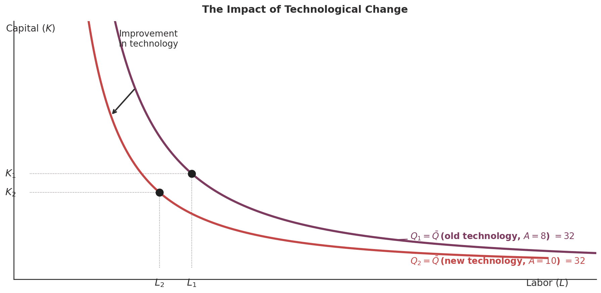
Theory & Data 7.4 — Kerala Fishers and Mobile Phones
Jensen (2007 QJE) studied 15 fish markets along the Kerala coast, 1997–2001. The technology of fishing didn't change. The phones did.
Before mobile phones
Fishers had to guess which of ~15 beach markets to land at
5–8% of catch wasted daily — perishable fish, wrong beach
Price dispersion 0–14 rupees/kg across markets on the same day
Same boats, same nets, same fishers. The friction was information.
A Kerala fisher on the phone — the technological change Jensen identified.
Poll #2 — What economic concept did Kerala phones illustrate?
The introduction of mobile phones in the Kerala fishing industry resulted in which of the following? Same boats, same crews, same nets — but more saleable fish per trip and less waste.
A) Constant returns to scale
B) A diminishing marginal product of labor
C) Total factor productivity growth
D) A decreasing production function
30 sec to vote
Poll #2 — Answer: C) Total Factor Productivity Growth
Same \(K\), same \(L\), more saleable \(Q\) ⇒ the only thing that could have changed is the multiplier \(A\). That's the textbook definition of Hicks-neutral TFP growth.
Why the others are wrong. (A) CRS asks what happens when we scale BOTH K and L — Kerala held both fixed. (B) Diminishing MP\(_L\) requires adding labor — Kerala's L didn't grow. (D) "Decreasing production function" would mean less Q for same inputs — the opposite of what happened.
Kerala After Phones — The Hicks-Neutral \(A\)-Shift
After mobile phones (5–10 weeks)
Waste falls from 5–8% → essentially zero
Price dispersion collapses to a tight band
Output per boat +8%; fisher profits +8%
Consumer prices −4%
Same \(K\), same \(L\) — what changed is \(A\). Mobile phones acted as a Hicks-neutral upward shift:
Every isoquant shifts inward; the same boats and nets now produce more saleable fish.
Source: Jensen, "The Digital Provide," QJE 2007, DOI 10.1162/qjec.122.3.879. Popularized in Freakonomics (2009 paperback).
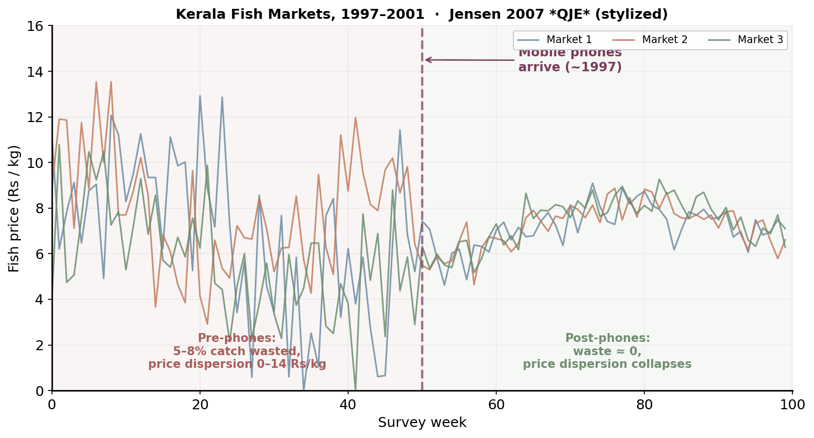
Chapter Summary
Production function
\(Q = f(K, L)\) maps inputs to maximum feasible output. Free disposal + convex isoquants are the standard assumptions.
Marginal products
\(MP_K = \partial f/\partial K\), \(MP_L = \partial f/\partial L\). Cobb-Douglas: \(MP_i = \text{share}_i \times Q/i\). Diminishing in own input when other is fixed.
MRTS
\(\text{MRTS}_{LK} = MP_L/MP_K\). Slope of isoquant. Cobb-Douglas: \((\beta/\alpha)(K/L)\) — diminishing as you slide down the curve.
Returns to scale
Cobb-Douglas shortcut: \(\alpha + \beta\) vs 1. Euler's theorem under CRS: \(K \cdot MP_K + L \cdot MP_L = Q\).
Three families
Cobb-Douglas (smooth), Leontief (fixed proportions), perfect substitutes (linear). All nested by CES with \(\sigma = 1/(1-\rho)\).
Technology shifts
TFP growth \(Q = A f(K,L)\) shifts isoquants inward. Explains Kerala’s fishers — same boats, same crews, more value landed.